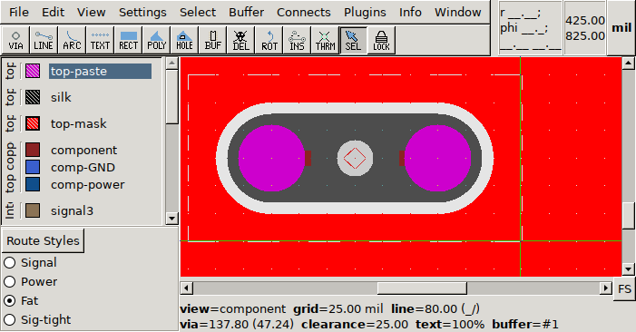

by Igor2
An old element used to have only pins and pads. Both pin and pad are very limited special cases: a pin has a single hole and the same ring around it on every layer, a pad is just a line on either the top or bottom copper layer (with round cap or square cap on both ends).
Many of the footprint related limitations in PCB was coming from this pin/pad model. In pcb-rnd subcircuits these limitations are removed. However, removing limitations also means being able to make more complex things, which also means we need to have more understanding on how we are doing things. Or at least different understanding, not necessarily more: instead of understanding the arbitrary limitations of pins and pads, we need to understand how arbitrary objects may make up a terminal.
Using arbitrary objects (of lines, arcs, polygons, texts and vias) as a terminal is called the heavy terminal model. It is fully generic: whatever pcb-rnd can draw can be turned into a terminal. This includes arbitrary objects on arbitrary layers. For example an oblonged pin with two paste dots on the top layer can be drawn as:

All objects are tagged with a "term" attribute that has the same value, which also donates the pin number. If we are after a specific pin by number, we know all these objects are part of that.
While this lets the user easily define any kind of complex terminals, it also removes the possibility of some of our old, handy shortcuts. For example pressing 's' on pin grew its ring diameter. But what should it do with such a complex construct? Should it make the oblonged line thicker, but not longer? Or grow everything proportionally? The drill diameter too, or is that an exception? And what if it's not a drill but a slot, which is a line, should that be grown or not?
The current solution is that 's' and similar operations simply don't work on terminals as a whole, but on individual objects of the terminals. This can be changed later, but we won't ever have the same simple, universal 's' as we had for pins, as we don't have the pin restrictions anymore.
Later on, either in the next development cycle, or the cycle after, pad stacks will be introduced. Pad stacks will replace vias. A pad stack is something in between the very limited pin model and the heavy terminal model: it offers a lot of flexibility, yet it contains some restrictions. These restrictions will make us able to have our 's'-like operations again.
A padstack will look something like this:
A simple-polygon is a polygon that has only one contour and no holes, can not be cleared (i.e. lines/arcs won't make a clearance within this polygon).
The light and heavy solutions will happily live side by side. I expect vast majority of thru-hole pins and smd pads on common parts will be specified by pad stacks. There will be a few special cases where the user needs to use a heavy terminal; typical examples include: